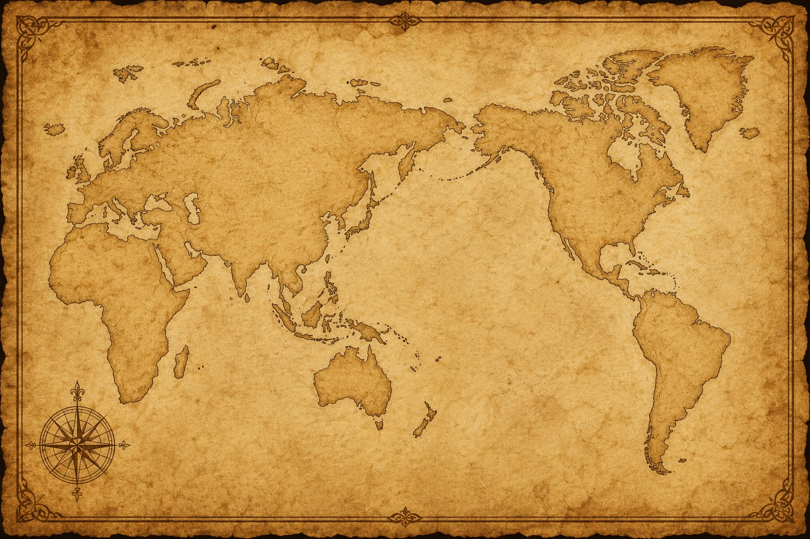

type A: WORLD HISTORY LEADER INVESTIGATION
세계사 리더 성향 검사
정답은 없습니다. 각 문항을 읽고 자신의 생각과 가장 가까운 답을 선택해 주세요.
검사를 마치면 나의 세계사 리더 유형 1~3순위가 바로 나타납니다.
검사 결과 확인
당신의 세계사 리더 성향 결과입니다.
지도자 유형 카드 보기
결과에 나온 유형뿐 아니라 다른 유형도 자유롭게 열람할 수 있습니다.
지도자님의 리더 유형을 파악하셨나요?
이제 지도자님이 어떤 성향을 갖고 정국을 운영하셔야 할지 대강 감이 잡히셨을 겁니다.
하지만 지도자의 성향과 그에 따른 선택만으로 역사가 만들어지지는 않습니다.
전쟁은 때로 문명의 운명을 바꾸었고,
세계의 질서를 새롭게 만들었습니다.
이제 청동 전략말을 선택하여
역사의 분기점이 된 전투들을 탐험해 보세요.
type B: Battles That Changed the World
세계를 뒤바꾼 주요 전투
청동 전략말을 선택하여 세계사의 분기점이 된 전투를 탐험해 보세요.

TYPE C : WORLD HISTORY FAQ
학생들이 가장 자주 묻는 질문을 모았습니다.
역사는 단순한 암기 과목이 아닙니다. 정치, 경제, 과학기술, 외교, 문화가 어떻게 발전했는지 이해하게 해 주며 거의 모든 전공과 연결될 수 있습니다.
컴퓨터, 인터넷, GPS, 원자력, 우주개발 등 현대 기술은 모두 역사적 배경 속에서 발전했습니다.
전쟁의 원인은 시대마다 다르지만 권력, 자원, 종교, 민족주의, 이념 갈등이 반복적으로 등장합니다.
사건을 외우기보다 원인과 결과를 연결하며 생각하는 것입니다.
과거에는 그런 경우가 많았지만 현대 역사학은 다양한 관점과 자료를 함께 검토합니다.
한국의 역사도 세계사 속 국제 질서와 긴밀하게 연결되어 있기 때문입니다.
대부분의 인물은 복합적인 면을 가지고 있으며 시대적 맥락 속에서 이해할 필요가 있습니다.
AI는 정보를 제공하지만 인간은 역사적 맥락과 가치 판단을 수행해야 합니다.
AI 역사 참모
세계사와 관련된 궁금한 점을 AI 역사 참모에게 물어보세요.